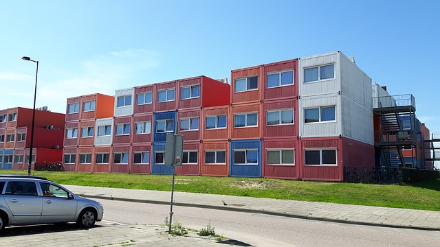

<ion-header [translucent]="true">
  <ion-toolbar color="primary">
  <ion-title>Hommy</ion-title>
  </ion-toolbar>
</ion-header>
 
<ion-content [fullscreen]="true">
  <ion-fab vertical="bottom" horizontal="end" slot="fixed">
    <ion-fab-button>
      <ion-icon name="add"></ion-icon>
    </ion-fab-button>
    <ion-fab-list side="top">
      <ion-fab-button routerLink="/cadastro"><ion-icon name="person-circle-outline"></ion-icon></ion-fab-button>
    </ion-fab-list>
    <ion-fab-list side="start">
      <ion-fab-button routerLink="/anunciar"><ion-icon name="create-outline"></ion-icon></ion-fab-button>
    </ion-fab-list>
  </ion-fab>
  
  <ion-text>
    <h4 class="recommended">Recomendados</h4>
  </ion-text>
  <ion-slides pager="true"[options]="slideOpts">
    <ion-slide *ngFor="let republic of republicsArray">
      <ion-card>
        
        <ion-card-header>
          <ion-card-title><h5>{{republic.name}}</h5></ion-card-title>
          <ion-card-subtitle>{{republic.address}}</ion-card-subtitle>
          <ion-text><h6>{{republic.city}}</h6></ion-text>
          <ion-text><h6>{{republic.district}}</h6></ion-text>
          <ion-text><h6>{{republic.description}}</h6></ion-text>
        </ion-card-header>
      </ion-card>
    </ion-slide>
  </ion-slides>
</ion-content>
